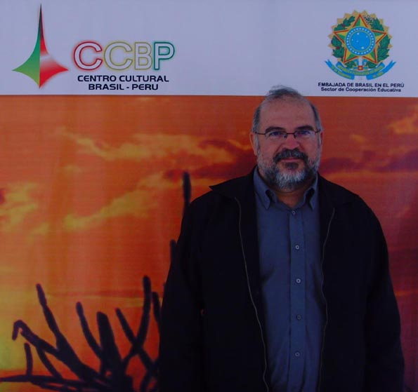

Peru 2010
Paulo Cheida faz palestra em Lima a convite da Embaixada do Brasil
Paulo Cheida Sans, diretor do Museu Olho Latino, Atibaia, SP, e professor da Faculdade de Artes Visuais da PUC-Campinas, realizou palestra sobre a Gravura Brasileira no dia 04 de novembro, às 19h, no Centro Cultural Brasil-Peru, em Lima, Peru.
O prof. Dr. Cheida foi convidado pela Embaixada do Brasil peruana para participar da Semana Cultural Brasileira, a fim de divulgar a arte do nosso país.
Na palestra apresentou um breve histórico da gravura, mencionando os principais gravadores, a gravura na literatura de cordel e o Museu Olho Latino na Estância de Atibaia, SP. Para ilustrar a palestra será realizada a exposição de Gravuras de alunos do Curso de Artes Visuais da PUC-Campinas no auditório do Centro Cultural Brasil Peru.
Paulo Cheida é Doutor em Artes pela Unicamp. Participou de cerca de 400 mostras no Brasil e exterior. Recebeu 41 prêmios em Salões de Artes, sendo três no exterior, em Portugal, Estados Unidos e França. Recebeu vários títulos como o de Comendador das Artes. Suas obras figuram em diversos acervos importantes no exterior, como o da Embaixada do Brasil em Ottawa, Canadá; Cooperativa de Atividades Artísticas Árvore, em Porto, Portugal; Museu Nacional de Belas Artes, em Santiago, Chile; Casa das Américas, em Havana, Cuba; Casa de Humor e Sátira, em Gabrovo, Bulgária; Museu Pohjanmaan, em Vasa, Finlândia. No Brasil, está representado, entre outros, nos acervos do Museu de Arte Contemporânea de São Paulo; Museu da Gravura e Museu de Arte Contemporânea, ambos de Curitiba. Em Brasília suas obras são encontradas no Museu de Arte, na Caixa Cultural e na Casa da Cultura da América Latina da Universidade de Brasília. Organizou e é autor de vários livros sobre Artes, sendo seu mais recente “Aspectos da Cultura Popular em Campinas”, publicado pela PUC-Campinas no final do ano passado.
A palestra Gravura Brasileira de Paulo Cheida Sans foi no dia 04 de novembro, às 19 h, no auditório do Centro Cultural Brasil – Peru, A. Benavides, 1180, Miraflores, Lima, Peru.
{kind=link}

Grupo Olho Latino expõe gravuras em Lima, Peru
{kind=link}
O grupo de arte Olho Latino expõe “Agregados de la expresión colectiva” de 29 de outubro a 06 de novembro no Taller Kimkilen, em Lima, Peru, reunindo 20 gravuras com grandes dimensões de 12 artistas.
Parte desta mostra no Peru está sendo exposta simultaneamente no Museu Olho Latino em Atibaia, SP. A gravura possibilita que o artista faça tiragem da matriz, ou seja, faça a mesma obra mais vezes. A matriz mais usada pelo grupo é a madeira, modalidade técnica conhecida como xilogravura.
Cada um dos artistas fez a sua gravura sendo composta por três partes, para que fosse desmembrada e misturada às demais partes de outras gravuras, formando assim uma nova obra. Isso explica o título da mostra, pois são obras que podem se multiplicar quando as partes são casadas entre as diferentes peças, formando um trabalho coletivo.
O grupo de artistas, coordenado pelo prof. Dr. Paulo Cheida Sans, faz parte do setor de arte-educação do Museu Olho Latino. Os artistas são formados em Artes Plásticas pela PUC-Campinas. A primeira mostra deste grupo foi realizada na Galeria da Casa da Cultura da América Latina da Universidade de Brasília, em 1996. A partir daí, o grupo já expôs em mais de 50 mostras realizadas em várias cidades, entre elas, São Paulo (SP), Campinas (SP), Recife (PE), Curitiba (PR), Juiz de Fora (MG) e Jundiaí (SP).
O grupo Olho Latino é formado por 12 artistas residentes em cidades do interior do Estado de São Paulo. Os artistas são formados em Artes Plásticas pela PUC-Campinas e possuem currículos extensos. Alguns foram premiados em salões e expuseram no exterior.
Participam da mostra os seguintes artistas: Alex Roch, Cibele Marion Sisti, Celina Carvalho, Elika Ito, Flávia Bresil Palhares, Lisa França, Maricel Fermoselli, Paulo Cheida Sans, Regiane Capp Couto Buccioli, Suely Arnaldo, Walcirlei Siqueira e Young Koh.
O grupo recentemente expôs na Galeria da Universidad Mayor de San Andrés, em La Paz, Bolívia. O curador do Museu Olho Latino, Paulo Cheida, diz ser importante a realização e a valorização de mais exposições entre os países latinos, formando um intercâmbio mais rico com culturas mais próximas da nossa.
O Museu Olho Latino tem como objetivo estimular e valorizar a produção artística da gravura latino-americana. Realiza a “Grabados & Gravuras”, evento destinado à América Latina, iniciado e mantido com a curadoria de Cheida desde 1991, somando a realização de mais de 10 edições, expostas em vários locais, até no exterior, como aconteceu em Quebec, Canadá.
Estão confirmadas as participações da Bolívia e do Peru na próxima mostra Bienal Grabados & Gravuras que se realizará no início do próximo ano no Museu Olho Latino.
A mostra do grupo Olho Latino estará aberta à visitação até 06 de novembro no Taller Kimkilen. Av. Grau 170, Barranco, Lima, Peru.
{kind=link}